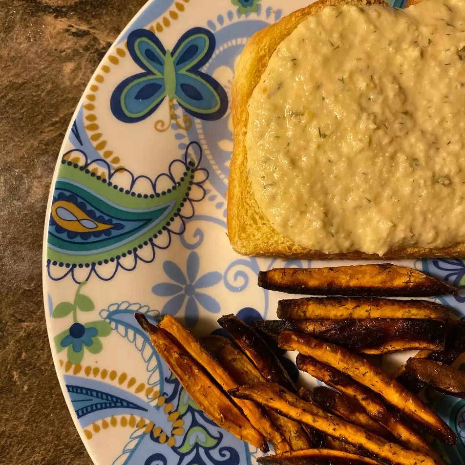

Vegan Tuna Salad

I am a vegan. I was craving tuna salad sandwich.
This was perfect.
You can't even tell you are not eating tuna salad.
Use as you would in sandwiches.
Ingredients
- ⅓ cup olive oil
- ¼ cup soy milk
- 1 teaspoon sea salt
- 1 teaspoon white sugar
- 1 teaspoon Dijon mustard
- 1 teaspoon rice vinegar
- 1 cup drained canned chickpeas (garbanzo beans)
- ½ cup chopped dill pickles
- 1 stalk celery
- ¼ cup dried chopped onion
- 1 teaspoon dried dill weed
Steps
- Whisk olive oil, lemon juice, red wine vinegar, oregano, garlic, salt,
and pepper together in a medium bowl.
Add cubed lamb and stir until lamb is coated with marinade.
Cover and refrigerate 3 hours, or overnight.
- Preheat an outdoor grill for medium-high heat and
lightly oil the grate.
- Thread marinated lamb onto skewers,
reserving any remaining marinade.
Grill skewers until desired doneness, 10 to 12 minutes,
basting with the reserved marinade and turning occasionally
for even cooking.